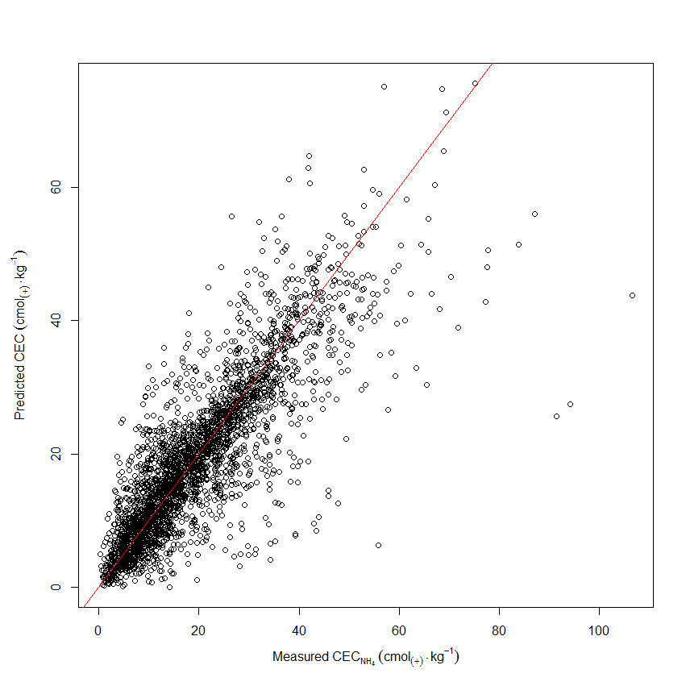

Empirical-Mechanistic modelling of soil carbon with NIR spectra
Empirical-Mechanistic modelling of soil carbon with NIR spectra
Talk summary
Background
Model components
Empirical models
Mechanistic models
NIR spectra
Project aims
Soil carbon
Climate change
Carbon credits
Soil fertility
Topical
Several projects around the world
GlobalSoilMap.net
National Soil Carbon Program
RaCA
What's already out there?
Empirical models
All pedotransfer functions involving carbon
Carbon spatial models
SSURGO
Kriging models
Mechanistic models
Work with carbon pools
Roth C
Century
NIR spectra
Light in 350-2500nm range
Quick and cheap to measure
Relative to lab analysis
Possibility of field measurement
How NIR is used
Primarily in empirical models
Multiple linear regression
Boosted regression trees
Partial Least Squares
Principal Component Regression
Used directly for prediction of a single soil property
e.g. carbon
Problems
All narrow in their focus
No internal validation
If a prediction is off in obvious ways, it remains so
The solution?
Project aims
Generate empirical model to predict SOC from NIR spectra
Use this model for cheap NIR: Quick easy sampling
First with error checking, then iteration
Combine spectral model with covariates to predict carbon at regional scale
Use regional estimates as starting values for SOC mechanistic models
Predict soil carbon for next 30 years
1. Generating the empirical model
Empirical model
Two stages
Generate model with error checking
Generate iterative model
More challenging, but the ultimate goal
Error checking
Use Cubist to generate starting values
Generate models for several response variables
Compare responses for gross inconsistencies such as low pH and high calcium carbonate
Flag points
Iterative model
More ambitious
Take flagged points and adjust until consistent
Make network of prediction paths
Weight methods by accuracy
Take path with lowest cost
Iterative model advantages
Model which works more like scientific process
Extrapolation has check steps
2. Combining the spectral models
Predicting at the regional scale
NIR models allow more points to be measured
NIR is cheap
Measuring soil carbon is not
Use covariates from SSURGO
Use MCMC to make predictions
3. Temporal models
Predicting at the regional scale over time
Values for carbon now exist over entire regional scale
Use carbon models such as Roth C and Century
Predict carbon over regional scale for ~30 years
What have you done so far?
An example
Quantifying clay minerals using spectra, org C and clay
Using spectra, org C and clay to predict soil minerals
Kaolinite, Illite and Montmorillonite
Validate prediction using CEC

In summary
Cheat Sheet
NIR is a cheap way to measure soil carbon
This fact allows multiple point measurements to be taken
Multiple point measurements allows more accurate extrapolation
Once regional models have been produced: predict stocks for next 30 years
References (for those playing at home)
Véronique Bellon-Maurel, Alex McBratney, (2011) Near-infrared (NIR) and mid-infrared (MIR) spectroscopic techniques
for assessing the amount of carbon stock in soils – Critical review
and research perspectives. Soil Biology and Biochemistry43 (7) 1398 - 1410-NA 10.1016/j.soilbio.2011.02.019
R. A. Viscarra Rossel, (2011) Fine-resolution multiscale mapping of clay minerals in Australian
soils measured with near infrared spectra. Journal of Geophysical Research116 (F4) 04023-NA http://www.agu.org/pubs/crossref/2011/2011JF001977.shtml